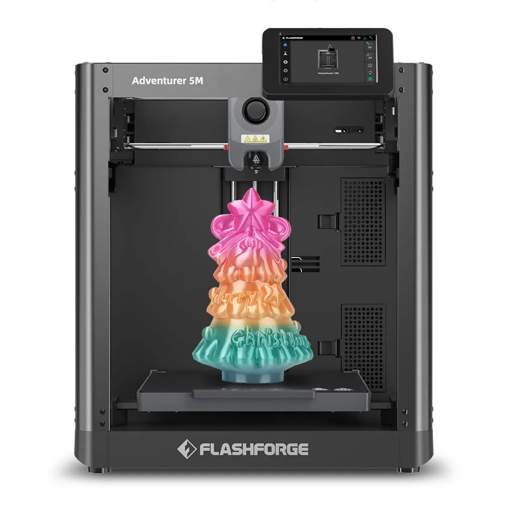
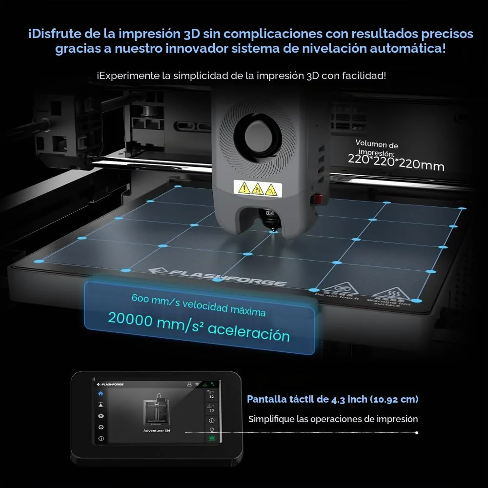
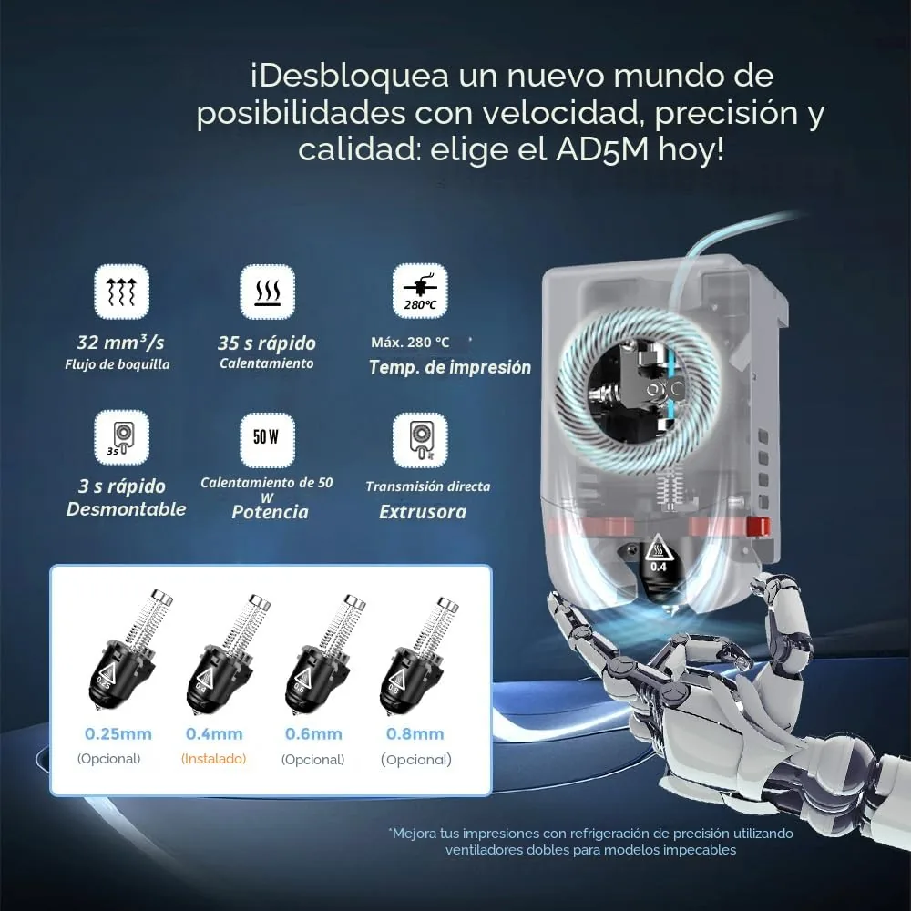
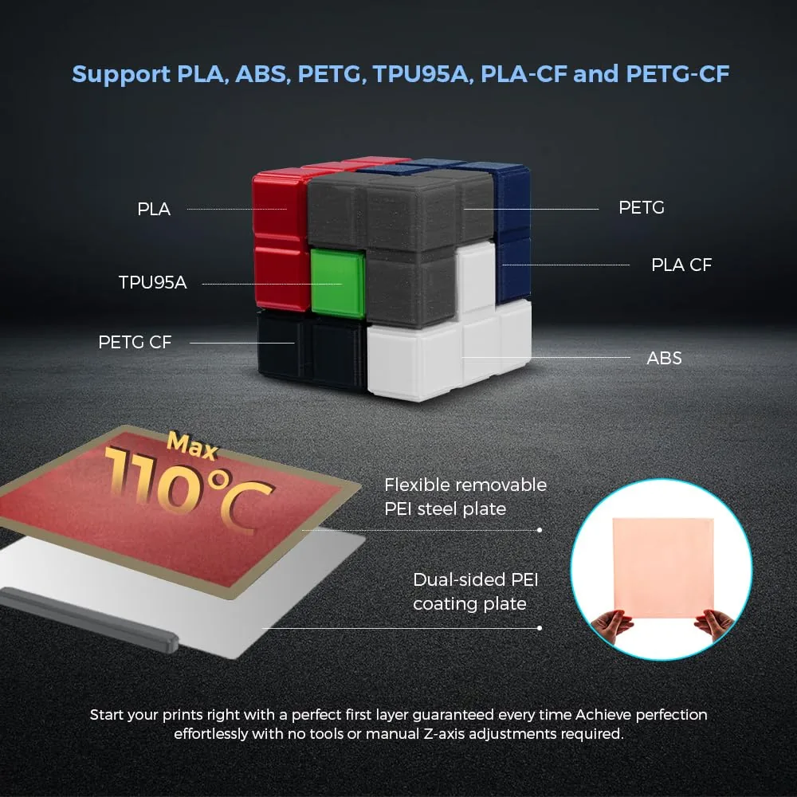
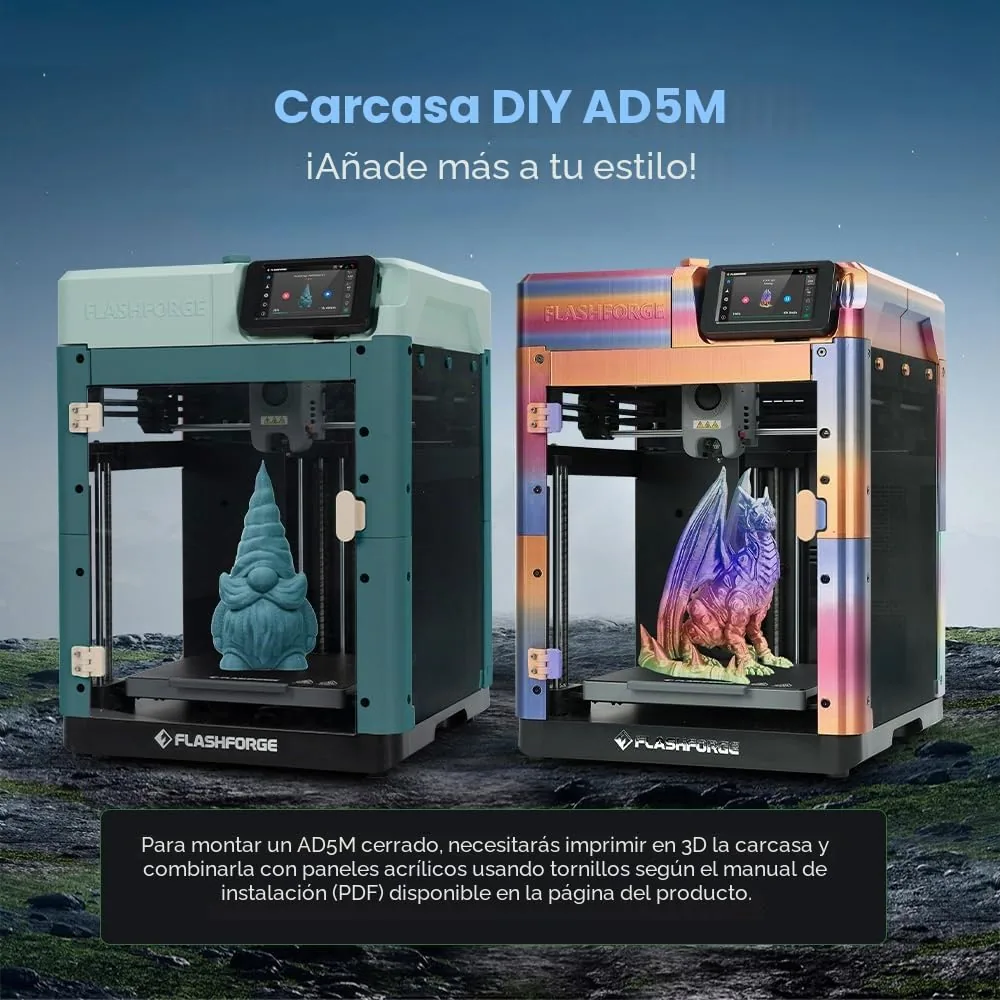

FlashForge
FlashForge Adventurer 5M
Valoración del editor
Puntuaciones editoriales de 0 a 10, comparables entre productos del mismo tipo. No son una puntuación oficial de Amazon.
Ficha técnica
General
| Tipo | FDM |
|---|---|
| Auto-nivelado | Sí |
| Temp. máx. cama | 100 °C |
| Velocidad máxima | 600 mm/s |
| Extrusor | directo |
| Pantalla | Sí |
| Diámetro de filamento | 1.75 mm |
| Nivel de ruido | — |
| Garantía | 12 meses |
Dimensiones
| Cama X | 220 mm |
|---|---|
| Cama Y | 220 mm |
| Cama Z (altura) | 220 mm |
| Peso | 10.8 kg |
Otros datos
| Estructura | CoreXY, cámara totalmente cerrada |
|---|---|
| Aceleración máxima | 20.000 mm/s² |
| Nivelación | Automática de 1 clic |
| Boquilla | Desmontable rápida, hasta 280°C, compatible 0,4mm (PLA/PETG/TPU) y 0,6mm (PLA-CF/PETG-CF) |
| Placa de impresión | PEI de doble cara, extraíble y flexible |
| Sensor de filamento | Detecta agotamiento y permite reanudar tras corte de luz |
| Conectividad | WiFi, USB |
| Garantía | 12 meses (según web oficial FlashForge EU), no confirmado en la ficha de Amazon |
| Nivel de ruido | No publicado por el fabricante para este modelo (el modelo superior 'Pro' declara ~50dB, no aplicable directamente a esta variante) |
| Producto en Amazon.es desde | 23 octubre 2023 |
La Adventurer 5M es la propuesta de FlashForge para quien quiere una impresora rápida y cerrada sin tener que montarla ni calibrarla a mano. La nivelación automática de un clic prepara la cama antes de cada impresión, y la estructura CoreXY con 20.000 mm/s² de aceleración le permite alcanzar 600 mm/s — más del doble que la Ender-3 V3 SE de este mismo catálogo. Al estar completamente cerrada, es más silenciosa y segura para imprimir PETG o materiales con fibra de carbono que una impresora de estructura abierta.
Las reseñas (mayoritariamente en inglés, de EE.UU., Canadá y Australia) son muy positivas y coinciden en un punto: es fácil de usar «desde la caja», sin apenas puesta a punto. Alguien la describe como «la mejor impresora para principiantes que no quieren trastear». El software propio (FlashPrint) recibe alguna crítica de que a veces resulta menos pulido que alternativas de terceros como Orca-Flashprint, que varias reseñas recomiendan usar en su lugar. Un usuario reporta un fallo temprano de un sensor, resuelto en pocos días gracias a un soporte técnico que varias reseñas destacan como muy bueno.
Con 4,2 sobre 5 y 808 valoraciones, es una de las impresoras con más recorrido de opiniones reales del catálogo en su franja de precio.
- Cámara totalmente cerrada: más silenciosa y apta para PETG/materiales con fibra de carbono
- Velocidad de hasta 600 mm/s, muy por encima de las impresoras de entrada
- Nivelación automática de un clic, lista para imprimir en unos 10 minutos según varias reseñas
- Sensor de filamento agotado y recuperación tras corte de luz
- 808 reseñas verificadas con 4,2/5, soporte técnico muy valorado en casos de fallo
- Ecosistema de software algo cerrado: varias reseñas recomiendan usar Orca-Flashprint en vez del FlashPrint oficial
- La cámara integrada solo funciona con uno de los dos programas de laminado incluidos
- Pantalla táctil algo sensible a la fuerza del toque según una reseña
- Caso puntual de fallo de sensor en las primeras semanas, resuelto por soporte técnico
Ideal para: Quien quiere una impresora rápida, cerrada y silenciosa, con mínima puesta a punto, y no le importa depender del ecosistema de software de FlashForge (o cambiar a Orca-Flashprint).
Qué dicen los compradores
4,2 sobre 5 con 808 valoraciones, la inmensa mayoría en inglés (EE.UU., Canadá, Australia) y muy positivas. Se repite la facilidad de uso y la calidad de impresión «out of the box»; la crítica más citada es el software FlashPrint, que varias reseñas prefieren sustituir por Orca-Flashprint.
Reseñas mostradas en Amazon en el momento de la captura.
Como Afiliados de Amazon, obtenemos ingresos por las compras que cumplen los requisitos aplicables. «Amazon» y el logo de Amazon son marcas de Amazon.com, Inc. o sus filiales.